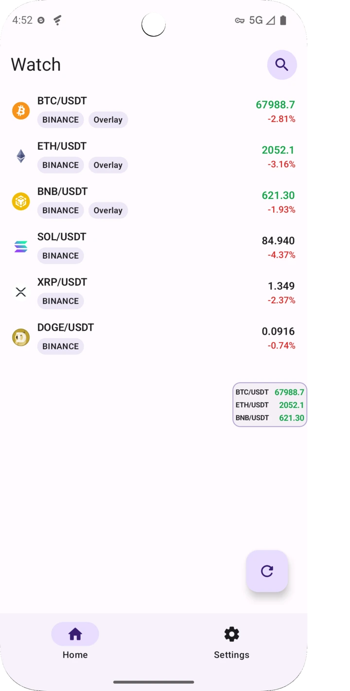
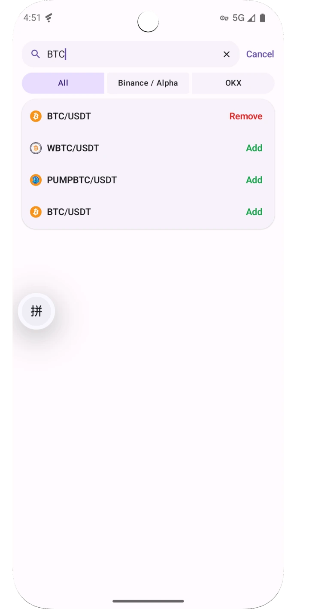
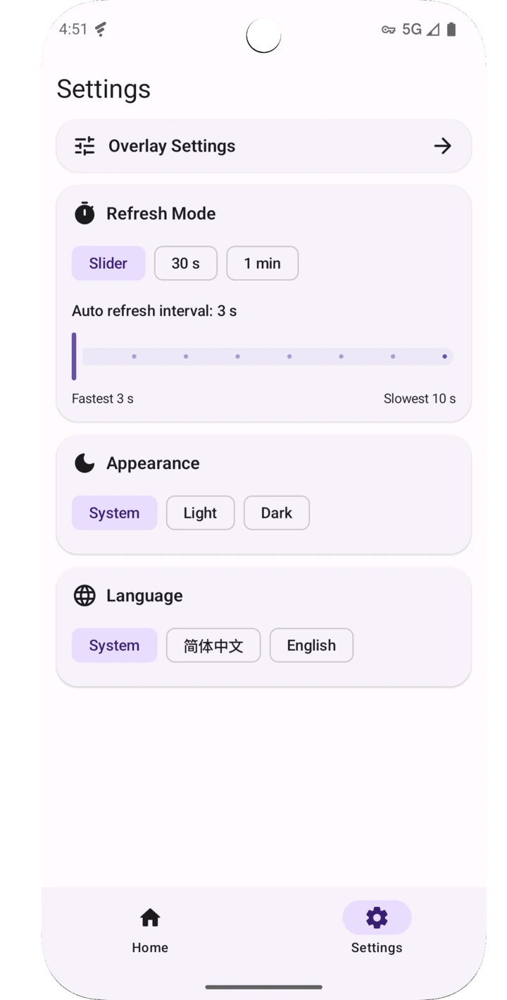
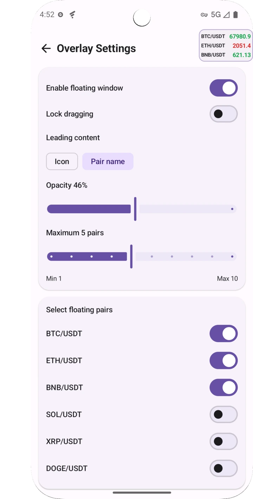

Android · Open Source
观察列表 + 悬浮窗盯盘
CoinMonitor
一个专注于币价追踪效率的 Android 盯盘应用。 支持搜索交易对、维护观察列表，并在任意应用上方用悬浮窗快速查看实时价格。
- 快速搜索现货交易对
- 观察列表集中管理
- 系统悬浮窗跨应用盯盘
- 实时刷新价格




观察列表 + 悬浮窗盯盘
一个专注于币价追踪效率的 Android 盯盘应用。 支持搜索交易对、维护观察列表，并在任意应用上方用悬浮窗快速查看实时价格。



